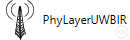
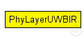
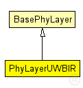

This documentation is released under the Creative Commons license
This documentation is released under the Creative Commons licenseA physical layer that models an Ultra Wideband Impulse Radio wireless communication system.
This class loads channel models and delivers frames to an UWB Decider. It is independent of the modulation technique, as long as the frames are represented using the same approach as in IEEE802154A.h (Maximum Pulse Amplitude Estimation).
Several channel models are possible: Ghassemzadeh-LOS, Ghassemadeh-NLOS (see UWBIRStochasticPathlossModel.h) and the IEEE 802.15.4A UWB channel models that use the default power delay profile (see UWBIRIEEE802154APathlossModel.h).
Currently, an energy detection receiver is modeled in UWBIRED.h. Several synchronization logics have been implemented in derived classes: see DeciderUWBIREDSync.h and and DeciderUWBIREDSyncOnAddress.h.
To add a novel receiver (e.g. coherent demodulation), either derive UWBIRED or write a new one, then add functionality in this module to load the new decider. The same procedure applies for new channel models.
To change the modulation, see UWBIRMac.h, IEEE802154A.h and UWBIRED.h.
To implement optional modes of IEEE802154A, see IEEE802154A.h.
Citation of the following publication is appreciated if you use the MiXiM UWB PHY model for a publication of your own. J. Rousselot, J.-D. Decotignie, An ultra-wideband impulse radio PHY layer model for network simulation. SIMULATION January 2011 vol. 87 no. 1-2 82-112.
For more information, see also:
[1] J. Rousselot, J.-D. Decotignie, An ultra-wideband impulse radio PHY layer model for network simulation. SIMULATION January 2011 vol. 87 no. 1-2 82-112. http://dx.doi.org/10.1177/0037549710377767.
[2] J. Rousselot, Ultra Low Power Communication Protocols for UWB Impulse Radio Wireless Sensor Networks. EPFL Thesis 4720, 2010. http://infoscience.epfl.ch/record/147987.
[3] J. Rousselot, J.-D. Decotignie, A High-Precision Ultra Wideband Impulse Radio Physical Layer Model for Network Simulation. Second International Omnet++ Workshop,Simu'TOOLS, Rome, March 2009. http://portal.acm.org/citation.cfm?id=1537714.
Author: Jérôme Rousselot
The following diagram shows usage relationships between types. Unresolved types are missing from the diagram. Click here to see the full picture.
The following diagram shows inheritance relationships for this type. Unresolved types are missing from the diagram. Click here to see the full picture.
| Name | Type | Description |
|---|---|---|
| BasePhyLayer | simple module |
Basic physical layer module. See the class "BasePhyLayer" documentation. |
| Name | Type | Default value | Description |
|---|---|---|---|
| coreDebug | bool | false |
debug switch for core framework |
| recordStats | bool | false |
enable/disable tracking of statistics (eg. cOutvectors) |
| headerLength | int | 0 |
defines the length of the phy header (/preamble) |
| usePropagationDelay | bool |
Should transmission delay be simulated? |
|
| thermalNoise | double |
the strength of the thermal noise [dBm] |
|
| useThermalNoise | bool |
should thermal noise be considered? |
|
| analogueModels | xml |
Specification of the analogue models to use and their parameters |
|
| decider | xml |
Specification of the decider to use and its parameters |
|
| sensitivity | double |
The sensitivity of the physical layer [dBm] |
|
| maxTXPower | double |
The maximum transimission power of the physical layer [mW] |
|
| timeRXToTX | double | 0 | |
| timeRXToSleep | double | 0 |
Elapsed time to switch from receive to sleep state |
| timeTXToRX | double | 0 |
Elapsed time to switch from send to receive state |
| timeTXToSleep | double | 0 |
Elapsed time to switch from send to sleep state |
| timeSleepToRX | double | 0 |
Elapsed time to switch from sleep to receive state |
| timeSleepToTX | double | 0 |
Elapsed time to switch from sleep to send state |
| initialRadioState | int | 0 |
State the radio is initially in (0=RX, 1=TX, 2=Sleep) |
| radioMinAtt | double | 1.0 |
radios gain factor (attenuation) while receiving |
| radioMaxAtt | double | 0.0 |
radios gain factor (attenuation) while not receiving |
| nbRadioChannels | int | 1 |
Number of available radio channels. Defaults to single channel radio. |
| initialRadioChannel | int | 0 |
Initial radio channel. |
| Name | Value | Description |
|---|---|---|
| class | PhyLayerUWBIR | |
| display | i=device/antennatower |
| Name | Direction | Size | Description |
|---|---|---|---|
| upperLayerIn | input |
from the MAC layer |
|
| upperLayerOut | output |
to the MAC layer |
|
| upperControlIn | input |
control from the MAC layer |
|
| upperControlOut | output |
control to the MAC layer |
|
| radioIn | input |
for sendDirect from other physical layers |
// // A physical layer that models an Ultra Wideband Impulse Radio wireless communication system. // // This class loads channel models and delivers frames to an UWB Decider. It is independent of the modulation technique, // as long as the frames are represented using the same approach as in IEEE802154A.h (Maximum Pulse Amplitude Estimation). // // Several channel models are possible: Ghassemzadeh-LOS, Ghassemadeh-NLOS (see UWBIRStochasticPathlossModel.h) // and the IEEE 802.15.4A UWB channel models that use the default power delay profile (see UWBIRIEEE802154APathlossModel.h). // // Currently, an energy detection receiver is modeled in UWBIRED.h. // Several synchronization logics have been implemented in derived classes: // see DeciderUWBIREDSync.h and and DeciderUWBIREDSyncOnAddress.h. // // To add a novel receiver (e.g. coherent demodulation), either derive UWBIRED or write a new one, // then add functionality in this module to load the new decider. // The same procedure applies for new channel models. // // To change the modulation, see UWBIRMac.h, IEEE802154A.h and UWBIRED.h. // // To implement optional modes of IEEE802154A, see IEEE802154A.h. // // Citation of the following publication is appreciated if you use the MiXiM UWB PHY model // for a publication of your own. // J. Rousselot, J.-D. Decotignie, An ultra-wideband impulse radio PHY // layer model for network simulation. SIMULATION January 2011 vol. 87 no. 1-2 82-112. // // For more information, see also: // // [1] J. Rousselot, J.-D. Decotignie, An ultra-wideband impulse radio PHY // layer model for network simulation. SIMULATION January 2011 vol. 87 no. // 1-2 82-112. <a href="http://dx.doi.org/10.1177/0037549710377767">http://dx.doi.org/10.1177/0037549710377767</a>. // // [2] J. Rousselot, Ultra Low Power Communication Protocols for UWB // Impulse Radio Wireless Sensor Networks. EPFL Thesis 4720, 2010. // <a href="http://infoscience.epfl.ch/record/147987">http://infoscience.epfl.ch/record/147987</a>. // // [3] J. Rousselot, J.-D. Decotignie, A High-Precision Ultra Wideband Impulse Radio Physical Layer Model // for Network Simulation. Second International Omnet++ Workshop,Simu'TOOLS, Rome, March 2009. // <a href="http://portal.acm.org/citation.cfm?id=1537714">http://portal.acm.org/citation.cfm?id=1537714</a>. // // @author Jérôme Rousselot simple PhyLayerUWBIR extends BasePhyLayer { parameters: @class(PhyLayerUWBIR); @display("i=device/antennatower"); }
This documentation is released under the Creative Commons license